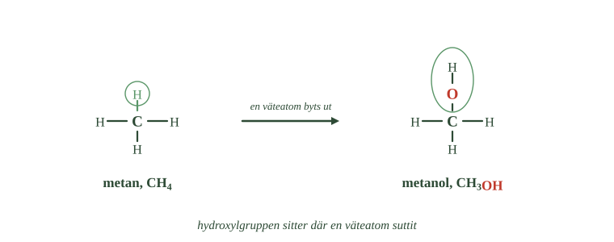
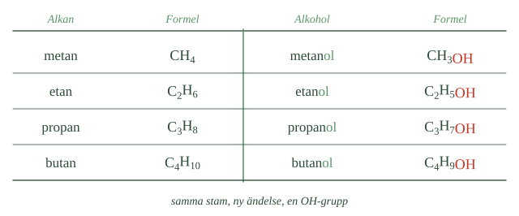
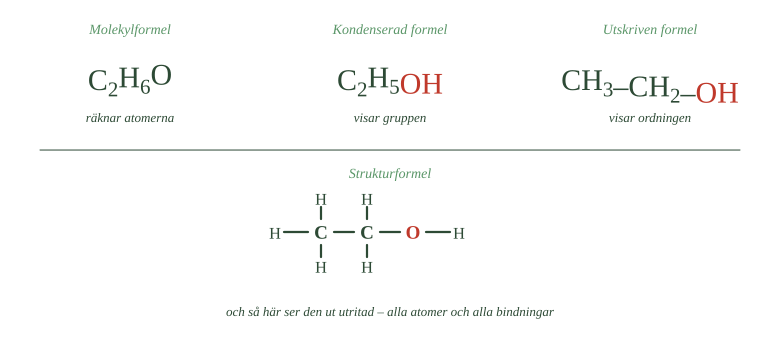
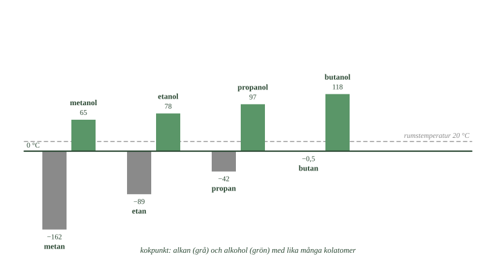

- Vilka atomslag finns i en alkohol?
- Vad kallas gruppen –OH?
- Vad händer med metan om en väteatom byts mot en hydroxylgrupp?
- Vad skiljer hydroxylgruppen från hydroxidjonen?
- Varför liknar metanol och etanol varandra mer än metan och metanol gör?
I förra delkapitlet arbetade vi med kolväten — ämnen som bara består av kol och väte. Nu ska vi möta en ny grupp: alkoholer.
En alkohol har också en kolkedja i botten. Skillnaden är att en väteatom har bytts ut mot en liten grupp som innehåller syre. Det låter som en liten ändring, men den gör enorm skillnad.
Här möter du också ett av den organiska kemins viktigaste begrepp: funktionell grupp.
Ett atomslag till
Kolvätena innehöll bara två atomslag: kol och väte.
Alkoholer innehåller tre: kol, väte och syre.
Det är syret som är det nya, och det är syret som gör att alkoholer beter sig helt annorlunda än kolväten.
De två enklaste alkoholerna
Den enklaste alkoholen heter metanol och har formeln \(\ce{CH3OH}\).
- Räkna väteatomerna i båda molekylerna. Hur många är det?
- Var sitter syreatomen i den högra molekylen?
- Vad är det egentligen som skiljer de två ämnena åt?

Nästa heter etanol och har formeln \(\ce{C2H5OH}\).
Jämför med kolvätena du redan känner. Metan är \(\ce{CH4}\). Etan är \(\ce{C2H6}\).
Kolkedjan finns alltså kvar. Det som har ändrats är att en väteatom har bytts mot en grupp med en syreatom och en väteatom i.
Gruppen heter hydroxylgrupp
Gruppen –OH kallas hydroxylgrupp.
Ta metan, \(\ce{CH4}\). Byt ut en av de fyra väteatomerna mot en OH-grupp. Nu har du \(\ce{CH3OH}\) — och ämnet är inte längre metan utan metanol.
Gör samma sak med etan, \(\ce{C2H6}\), och du får \(\ce{C2H5OH}\), alltså etanol.
Du kan tänka på en alkohol som två delar som sitter ihop: en kolvätedel och en hydroxylgrupp.
Hydroxylgrupp är inte samma sak som hydroxidjon
Här är något som är lätt att blanda ihop.
I kapitlet om baser mötte du hydroxidjonen, \(\ce{OH-}\). Den har en negativ laddning och finns fritt i lösningen.
Hydroxylgruppen i en alkohol skrivs också OH, men den är inte laddad. Den sitter fast i molekylen och är en del av den.
Samma bokstäver, två helt olika saker.
Det är gruppen som bestämmer
Hydroxylgruppen är alkoholernas funktionella grupp. En funktionell grupp är en grupp atomer som ger ämnet många av dess egenskaper.
Jämför metan och metanol. Båda har bara en kolatom. Ändå är metan en gas som knappt löser sig i vatten, medan metanol är en vätska som blandar sig med vatten hur som helst.
Jämför sedan metanol och etanol. De har olika långa kolkedjor. Ändå liknar de varandra mycket mer — för de har båda en hydroxylgrupp.
Slutsatsen: det är inte bara kolkedjan som bestämmer. Den funktionella gruppen har minst lika stor betydelse.
- Vilka atomslag finns i en alkohol?
- Vad kallas gruppen –OH?
- Vad händer med metan om en väteatom byts mot en hydroxylgrupp?
- Vad skiljer hydroxylgruppen från hydroxidjonen?
- Varför liknar metanol och etanol varandra mer än metan och metanol gör?
I förra delkapitlet arbetade vi med kolväten, ämnen som bara består av kol och väte. Nu går vi vidare till en ny grupp: alkoholer.
Alkoholer har också en kolkedja som grund. Skillnaden är att en väteatom har ersatts av en grupp som innehåller syre. Den lilla förändringen får stor betydelse — alkoholer får andra kokpunkter, annan löslighet och andra kemiska egenskaper än motsvarande kolväten.
Här möter vi också ett av den organiska kemins viktigaste begrepp: funktionell grupp.
Alkoholer innehåller tre atomslag
Kolvätena innehöll bara kol och väte. Alkoholer innehåller tre atomslag: kol, väte och syre.
Det är syreatomen som gör att alkoholer beter sig annorlunda.
Den enklaste alkoholen är metanol, \(\ce{CH3OH}\). Nästa är etanol, \(\ce{C2H5OH}\).
Jämför med metan, \(\ce{CH4}\), och etan, \(\ce{C2H6}\). Kolkedjan finns kvar. Det som ändrats är att en väteatom bytts mot en grupp med en syreatom och en väteatom.
Hydroxylgruppen sitter där en väteatom suttit
Gruppen –OH kallas hydroxylgrupp.
Byter man ut en av metanets väteatomer mot en hydroxylgrupp får man \(\ce{CH3OH}\). Ämnet är då inte längre metan utan metanol. Samma sak med etan: \(\ce{C2H6}\) blir \(\ce{C2H5OH}\), alltså etanol.
Man kan alltså tänka sig en alkohol som två delar: en kolvätedel och en hydroxylgrupp.
Hydroxylgruppen skrivs OH, men den är inte samma sak som hydroxidjonen, \(\ce{OH-}\), som vi mötte i kapitlet om baser. Hydroxylgruppen är en del av en neutral molekyl och har ingen laddning.
Gruppen bestämmer egenskaperna
Hydroxylgruppen är alkoholernas funktionella grupp — en grupp atomer som ger ämnet många av dess egenskaper.
Jämför metan och metanol. Båda har en enda kolatom. Ändå är metan en gas som knappt löser sig i vatten, medan metanol är en vätska som blandar sig med vatten i alla förhållanden.
Jämför sedan metanol och etanol. De har olika långa kolkedjor, men liknar varandra betydligt mer — eftersom båda har en hydroxylgrupp.
Det är alltså inte bara kolkedjans storlek som bestämmer egenskaperna. Den funktionella gruppen har minst lika stor betydelse.
---
Den funktionella gruppen är ett sätt att ordna kaos
Standardtexten inför funktionell grupp som ett begrepp som förklarar varför metanol och etanol liknar varandra. Det stämmer. Men begreppet är större än så, och det är värt att se varför det behövdes.
I delkapitel 1 såg du att antalet kolföreningar växer explosionsartat med molekylens storlek. Oktan har arton isomerer. En molekyl med trettio kolatomer har fler isomerer än det finns sekunder sedan jorden bildades.
Det borde göra organisk kemi omöjlig. Hur lär man sig ett ämne med hundra miljoner föreningar?
Svaret är att man inte gör det. Man lär sig grupperna.
En hydroxylgrupp beter sig ungefär likadant oavsett vilken molekyl den sitter på. Den gör ämnet mer vattenlösligt, höjer kokpunkten, och kan reagera på bestämda sätt. Det gäller metanol med en kolatom lika väl som en sockermolekyl med sex.
Därför kan en kemist titta på en okänd molekyl, hitta grupperna, och förutsäga en stor del av hur ämnet beter sig — utan att någonsin ha sett just den föreningen.
Du kommer att möta karboxylgruppen i nästa delkapitel och aminogruppen när proteinerna kommer. Varje ny grupp är ett nytt verktyg av samma slag.
Om modellen. Standardnivån säger att den funktionella gruppen har stor betydelse. Det är sant, men underskattat. Funktionella grupper är inte en egenskap hos molekyler — de är ett sätt att tänka som gör ett omöjligt stort ämne hanterbart. Utan dem hade organisk kemi varit en lista i stället för en vetenskap.
- Hur bildas namnet på en alkohol?
- Vad berättar ändelsen -ol?
- Vad visar den utskrivna formeln som molekylformeln inte visar?
- Var kan hydroxylgruppen sitta i en kolkedja?
- Varför har alkoholer fler isomerer än motsvarande alkaner?
Namnet slutar på -ol
Alkoholer kan ställas upp i en serie, precis som alkanerna. Och namnet är lätt att komma ihåg, för det bygger på alkanen:
metan \(\rightarrow\) metanol etan \(\rightarrow\) etanol propan \(\rightarrow\) propanol butan \(\rightarrow\) butanol
Stammen säger hur många kolatomer det finns. Ändelsen -ol säger att det finns en hydroxylgrupp.
- Jämför formlerna i varje rad. Vad har tillkommit?
- Följ namnen nedåt. Vad händer med stammen, och vad händer med ändelsen?
- Vad skulle nästa rad heta?

Du känner igen systemet. Ändelsen -an betydde alkan. Ändelsen -en betydde alken. Nu betyder -ol alkohol.
Serien växer som alkanserien
För varje steg i serien tillkommer en kolatom och två väteatomer. Exakt som hos alkanerna.
Regeln kan skrivas:
Här är n antalet kolatomer. Har alkoholen tre kolatomer blir det \(\ce{C3H7OH}\), alltså propanol.
Samma alkohol kan skrivas på flera sätt
I delkapitel 1 såg du tre sätt att visa en molekyl. För alkoholer används ytterligare ett, som ligger mitt emellan.
Ta etanol.
\(\ce{C2H6O}\) är molekylformeln. Den räknar bara atomerna: två kol, sex väte, ett syre. Men den säger ingenting om att det finns en hydroxylgrupp.
\(\ce{C2H5OH}\) skriver ut gruppen för sig. Nu syns det att molekylen har en kolvätedel och en OH-grupp. Men inte hur de sitter ihop.
\(\ce{CH3-CH2-OH}\) sätter streck mellan delarna. Varje streck är en bindning. Nu syns ordningen: först en kolatom med tre väten, sedan en kolatom med två väten, sist hydroxylgruppen.
Alla tre är samma molekyl. Skillnaden är hur mycket de visar.
- Räkna atomerna i varje skrivsätt. Blir det lika många överallt?
- Vilket skrivsätt döljer att det finns en hydroxylgrupp?
- Vilket skulle du välja om du ville visa var syreatomen sitter?

Ju fler hydroxylgrupper en molekyl har, desto mer behöver man den sista formen. Därför används den i avsnitt 3.
Alkoholer kan se olika ut fast de har samma formel
Alkoholer kan vara isomerer, precis som kolväten.
Kolkedjan behöver inte vara rak. En alkohol med fyra kolatomer kan ha en gren, ungefär som isobutan. Då kallas den isobutanol.
Men alkoholer har en möjlighet till. Hydroxylgruppen måste inte sitta längst ut i kedjan.
Tänk dig tre kolatomer på rad. OH-gruppen kan sitta på den första kolatomen — eller på den i mitten. Det ger två olika ämnen, med exakt samma molekylformel.
Därför finns det fler isomerer bland alkoholerna än bland alkanerna.
Hur alla de här isomererna namnges behöver du inte kunna. Det viktiga är principen: både kedjans form och gruppens plats påverkar ämnet.
- Hur bildas namnet på en alkohol?
- Vad berättar ändelsen -ol?
- Vad visar den utskrivna formeln som molekylformeln inte visar?
- Var kan hydroxylgruppen sitta i en kolkedja?
- Varför har alkoholer fler isomerer än motsvarande alkaner?
Namnet bildas med ändelsen -ol
Alkoholer med en hydroxylgrupp kan ordnas i en serie, precis som alkanerna. Namnet bygger på motsvarande alkan:
metan \(\rightarrow\) metanol · etan \(\rightarrow\) etanol · propan \(\rightarrow\) propanol · butan \(\rightarrow\) butanol
Stammen berättar hur många kolatomer molekylen har. Ändelsen -ol berättar att det finns en hydroxylgrupp.
Det är samma system som förut. Ändelsen -an betyder alkan, -en betyder alken, och nu betyder -ol alkohol.
Serien följer alkanserien
För varje steg tillkommer en kolatom och två väteatomer, precis som i alkanserien.
Den allmänna formeln för en alkohol med en hydroxylgrupp är:
Med tre kolatomer blir det \(\ce{C3H7OH}\), alltså propanol.
Samma alkohol kan skrivas på flera sätt
I delkapitel 1 såg vi tre sätt att visa en molekyl: molekylformel, strukturformel och molekylmodell. För alkoholer används ytterligare ett skrivsätt, som ligger mitt emellan de två första.
Ta etanol. Den kan skrivas på tre sätt i text:
Molekylformeln räknar bara atomerna: \(\ce{C2H6O}\). Den visar inte att det finns en hydroxylgrupp.
Den kondenserade formeln skriver ut gruppen för sig: \(\ce{C2H5OH}\). Nu syns att molekylen har en kolvätedel och en OH-grupp — men inte hur de sitter ihop.
Den utskrivna formeln sätter streck mellan delarna: \(\ce{CH3-CH2-OH}\). Varje streck är en bindning. Nu syns ordningen: en kolatom med tre väten, sedan en kolatom med två väten, och sist hydroxylgruppen.
Alla tre beskriver samma molekyl. Skillnaden är hur mycket de visar.
Ju fler hydroxylgrupper en molekyl har, desto mer behövs den utskrivna formen. Därför används den i avsnitt 3.
Alkoholer kan ha grenade kedjor
Alkoholer kan förekomma som isomerer, precis som kolväten.
Kolkedjan behöver inte vara rak. En alkohol med fyra kolatomer kan ha samma grenade kedja som isobutan, och kallas då isobutanol.
Men alkoholer har ytterligare en möjlighet. Hydroxylgruppen behöver inte sitta i änden av kedjan. Den kan sitta på vilken kolatom som helst, och två molekyler kan därför ha exakt samma molekylformel men skilja sig genom var OH-gruppen sitter.
Därför har alkoholer fler isomerer än motsvarande alkaner.
Hur de olika isomererna namnges lämnar vi därhän. Det viktiga är principen: både kedjans form och gruppens placering påverkar molekylen.
Hydroxylgruppens plats har ett namn, och det spelar roll
Standardtexten säger att hydroxylgruppen kan sitta på olika kolatomer och att vi lämnar namngivningen därhän. Det är rimligt — men skillnaden mellan placeringarna är inte bara en fråga om namn. Ämnena beter sig olika.
Med tre kolatomer finns två möjligheter. Sitter OH-gruppen på en ändkolatom kallas alkoholen primär. Sitter den på en kolatom som har två kolgrannar kallas den sekundär. Med fyra kolatomer tillkommer en tredje möjlighet: en kolatom med tre kolgrannar, och då kallas alkoholen tertiär.
Skillnaden märks när alkoholen reagerar. Primära och sekundära alkoholer kan oxideras — syre kan tas upp och väte avges — men de ger olika produkter. Tertiära alkoholer kan i praktiken inte oxideras alls, eftersom den kolatom som bär OH-gruppen inte har någon väteatom kvar att avge.
Det får konkreta följder. Etanol är primär och oxideras i kroppen till ättiksyra, vilket är hanterbart. Hade den varit tertiär hade levern inte kunnat göra sig av med den på samma sätt.
Placeringen av en enda grupp avgör alltså inte bara namnet, utan vilken kemi molekylen kan delta i.
Om modellen. Standardnivån behandlar placeringen som en källa till fler isomerer. Det är rätt räknat. Men isomerer som bara skiljer sig i namn är ointressanta — det är att de skiljer sig i beteende som gör placeringen värd att veta.
- Hur stor är skillnaden i kokpunkt mellan metan och metanol?
- Varför kan förklaringen inte vara molekylernas storlek?
- Vad gör syreatomen med elektronerna i OH-gruppen?
- Vad händer när man häller etanol i vatten, och vad händer med bensin?
- Varför minskar lösligheten när kolkedjan blir längre?
Skillnaden är enorm
Titta på de här fyra talen.
Metan kokar vid ungefär −162 °C. Metanol kokar vid +65 °C.
Etan kokar vid ungefär −89 °C. Etanol kokar vid +78 °C.
- Vilka staplar går nedåt, och vilka går uppåt?
- Hur stor är skillnaden i det första paret?
- Ligger någon alkohol under rumstemperaturlinjen?

Skillnaden i det första paret är mer än tvåhundra grader. Och molekylerna har nästan lika många atomer.
Det betyder något viktigt: förklaringen kan inte vara att alkoholmolekylerna är större. De är de knappt. Det måste vara hydroxylgruppen.
Varför kokar ett ämne?
För att en vätska ska koka måste molekylerna få så mycket energi att de kan slita sig loss från varandra och flyga iväg som gas.
Håller molekylerna fast vid varandra hårt behövs mycket energi, alltså hög temperatur. Håller de löst räcker det med lite.
Hydroxylgruppen gör att molekylerna håller ihop hårdare
I ett kolväte är attraktionen mellan molekylerna svag.
I en alkohol är den mycket starkare, och det beror på syreatomen.
Syret drar hårdare i elektronerna än vätet gör. Elektronerna hamnar därför lite närmare syret, och laddningen blir ojämnt fördelad i OH-gruppen. Ena änden blir lite negativ, den andra lite positiv.
Sådana ojämnt laddade grupper dras starkt till varandra.
Alkoholmolekyler sitter alltså bättre fast vid sina grannar än kolvätemolekyler gör. Det krävs mer energi för att få loss dem, och därför blir kokpunkten hög.
Den exakta förklaringen har ett eget namn. Den tittar vi på i fördjupningen.
Alkoholer löser sig i vatten
Hydroxylgruppen bestämmer också hur ämnet beter sig i vatten.
Häll etanol i vatten. Det blir ingen gräns mellan dem — det blir en enda blandning. Metanol och etanol blandar sig med vatten hur som helst.
Häll bensin i vatten. Det blir två skikt. Kolväten blandar sig inte alls.
Skillnaden är återigen OH-gruppen. Vattenmolekylerna dras starkt till den.
Men alkoholen är inte bara en OH-grupp. Den har också en kolvätedel, och den delen vill inte alls blanda sig med vatten.
Hos metanol och etanol är kolvätedelen liten, och hydroxylgruppen bestämmer. Men blir kolkedjan lång tar kolvätedelen över, och alkoholen slutar lösa sig i vatten.
Det pågår alltså en dragkamp inuti molekylen. Den dragkampen förklarar mycket av det alkoholer används till.
- Hur stor är skillnaden i kokpunkt mellan metan och metanol?
- Varför kan förklaringen inte vara molekylernas storlek?
- Vad gör syreatomen med elektronerna i OH-gruppen?
- Vad händer när man häller etanol i vatten, och vad händer med bensin?
- Varför minskar lösligheten när kolkedjan blir längre?
Skillnaden är stor
Metan kokar vid ungefär −162 °C, metanol vid +65 °C. Skillnaden är mer än tvåhundra grader.
Samma mönster hos etan och etanol: −89 °C mot +78 °C.
Molekylerna har nästan lika många atomer. Förklaringen kan alltså inte vara storleken — den måste ligga i hydroxylgruppen.
Hydroxylgruppen gör att molekylerna håller ihop hårdare
För att en vätska ska koka måste molekylerna få tillräckligt med energi för att lämna varandra.
I ett kolväte är attraktionen mellan molekylerna svag. I en alkohol är den mycket starkare.
Skälet är att syreatomen drar hårdare i elektronerna än väteatomen gör. Laddningen blir därför ojämnt fördelad i OH-gruppen, och molekylerna dras starkt till varandra.
De sitter alltså bättre fast vid sina grannar. Mer energi krävs innan de kan lämna vätskan, och kokpunkten blir högre.
Den exakta förklaringen bygger på en särskild sorts attraktion. Den undersöker vi på fördjupningsnivå.
Alkoholer löser sig i vatten
Hydroxylgruppen påverkar också lösligheten.
Metanol och etanol blandar sig med vatten i alla förhållanden. Häller man etanol i vatten får man inte två skikt utan en enda blandning. Ett kolväte som bensin gör tvärtom — det blandar sig inte alls.
Förklaringen är återigen OH-gruppen. Vattenmolekylerna dras starkt till den.
Men alkoholen har också en kolvätedel, och den blandar sig dåligt med vatten. Hos metanol och etanol är kolvätedelen liten och hydroxylgruppen dominerar. När kedjan blir längre tar kolvätedelen över, och lösligheten minskar.
Det är en dragkamp mellan två delar av samma molekyl. Den dragkampen förklarar mycket av det alkoholer används till.
Vätebindningen är den starkaste av de svaga
Standardtexten säger att syret drar hårdare i elektronerna, att laddningen blir ojämn och att molekylerna därför dras till varandra. Allt det stämmer. Men det förklarar inte varför skillnaden är så stor.
I delkapitel 2 mötte du van der Waals-krafter — den svaga attraktion som uppstår av att elektronerna tillfälligt ligger ojämnt. De finns i alla molekyler, också i alkoholer.
Det som tillkommer i en alkohol är en helt annan sorts attraktion, och den kallas vätebindning.
Den uppstår i ett mycket särskilt fall: när en väteatom sitter bunden till en syre-, kväve- eller fluoratom. De tre drar så hårt i elektronerna att väteatomen blir nästan avklädd — kvar blir en nästan naken atomkärna med positiv laddning.
En sådan väteatom dras kraftigt till ett ensamt elektronpar på en annan molekyls syreatom. Resultatet är en bindning som är svag jämfört med en riktig kemisk bindning, men ungefär tio gånger starkare än van der Waals-krafterna.
Det förklarar hela skillnaden i kokpunkt. Etan hålls ihop bara av van der Waals. Etanol hålls ihop av både van der Waals och vätebindningar — och det är vätebindningarna som kräver de hundra extra graderna.
Samma bindning förklarar varför vatten är flytande vid rumstemperatur trots att molekylen är mycket liten, och varför is flyter. Den håller också ihop DNA:s två strängar och ger proteiner deras form.
Om modellen. "Molekylerna dras till varandra starkare" är sant men slätar över något viktigt: det är inte samma kraft som blivit starkare, utan en ny sorts kraft som tillkommit. Skillnaden mellan etan och etanol är inte en gradskillnad. Det är en artskillnad.
Laddar övningskort…
Laddar frågor ...